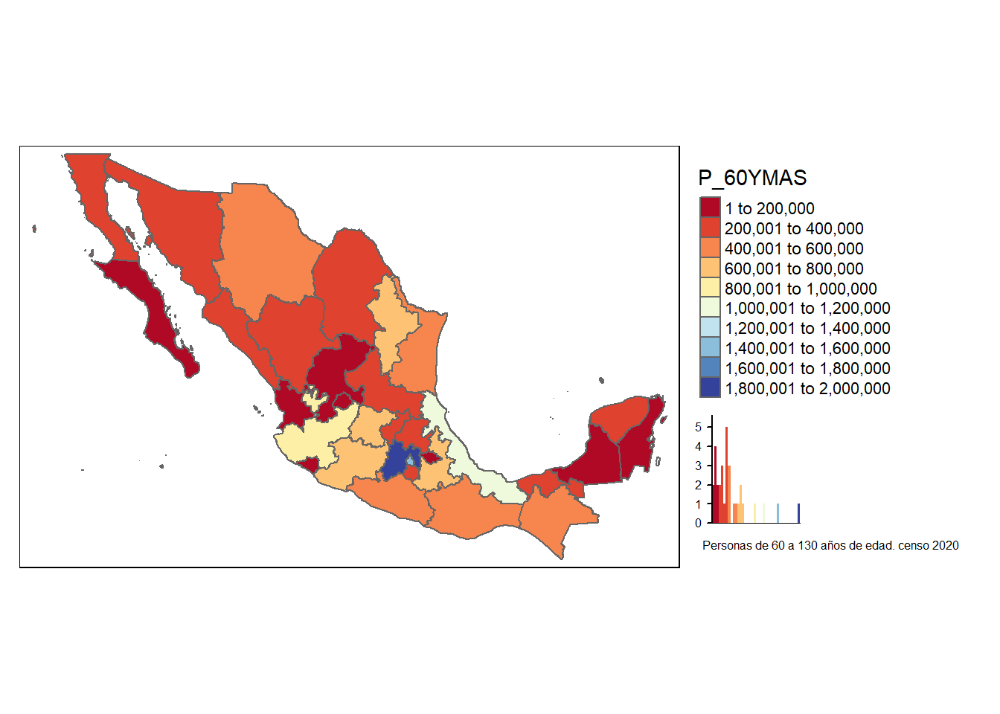

Capítulo 3 Variables parametrizadas al ejecutar
El siguiente texto ejemplifica la ejecución del código seleccionando la variable que se quiere estudiar
Los parámetros se seleccionan en la ejecución cómo se muestra en el video final
title: “Variable cartografiada”
author: “Claudia Guerrero S”
date: “07/02/2021”
output: html_document: df_print: paged pdf_document: default
params:
’#=======================#
’# Render Function: #
’#=======================#
estilo:
label: "Estilo"
value: jenks
input: select
choices: [pretty,equal,quantile,sd,kmeans,jenks,fisher]varname:
label: "Variable"
value: P_60YMAS
input: select
choices: [POBTOT,POBFEM,POBMAS,P_0A2,P_0A2_F,P_0A2_M,P_3YMAS,P_3YMAS_F,P_3YMAS_M,P_5YMAS,P_5YMAS_F,P_5YMAS_M,P_12YMAS,P_12YMAS_F,P_12YMAS_M,P_15YMAS,P_15YMAS_F,P_15YMAS_M,P_18YMAS,P_18YMAS_F,P_18YMAS_M,P_3A5,P_3A5_F,P_3A5_M,P_6A11]3.1 Código en el que se ejecuta el script maptwitter.Rmd
’```{r include=FALSE, echo = FALSE, ’message = FALSE, warning=FALSE} ’rmarkdown::render(“maptwitter.Rmd”, ’params = “ask”) #
’``` ## Código script maptwitter.Rmd
#knitr::opts_chunk$set(echo = FALSE)#La ruta para el mapa de México se toma del Marcogeostadístico nacional
#rutam<-"D:/Documents/Claudia/Midropbox/Investigacion y escritos/Marcogeoestadisticonacional/mg_sep2019_integrado/conjunto_de_datos"
#basemapan <- readOGR(rutam,"00ent", use_iconv = TRUE, encoding = "latin1")
#La ruta para el archivo que tiene las variables censales y su descripción
#rutvar<-"D:/Documents/Claudia/Midropbox/Investigacion y escritos"
#variablescensales<-read.csv(paste0(rutvar,"/Censo2020/","variablescensales.csv"),header=TRUE, sep=",",encoding="UTF-8")
## Importación de datos cartográficos
a<-unique( variablescensales$mnemonico)
print(a)## [1] "POBTOT" "POBFEM" "POBMAS" "P_0A2" "P_60YMAS"#url<-paste0("https://www.inegi.org.mx/contenidos/programas/ccpv/2020/datosabiertos/iter/iter_00_cpv2020_csv.zip")
#temp <- tempfile()
#temp2 <- tempfile()
#download.file(url, temp)
#unzip(zipfile = temp, exdir = temp2)
#rut<-file.path(temp2)
#censonal<- read.csv(paste0(rut,"/","conjunto_de_datos/conjunto_de_datos_iter_00CSV20.csv"),header=TRUE, sep=",",encoding="UTF-8")
#Datos de toda la entidad uso del campo nom_loc para identificar los valores de las variables a nivel estatal
censonal <-subset(censonalo,censonalo$NOM_LOC %in% c("Total de la Entidad"))
names(censonal)[1] <- "CVE_ENT"
#Ahora el mapa tiene el dato de las 198 variables del censo
#Conversión a número
codent<-substr(basemapan$CVE_ENT,1,2)
latmx="México"
codent<-sprintf("%02d%s", as.numeric(gsub("[^0-9]+", "", codent)), gsub("[0-9]+", "", codent))
censonal$CVE_ENT<-codent
cols = c(11:231)
censonal[,cols] %<>% lapply(function(x) as.integer(as.character(x)))
basemapa<-merge(basemapan,censonal, by="CVE_ENT", all.x =TRUE) tmap_mode("plot")
desc<-case_when(
params$estilo == "pretty" ~ "El estilo pretty redondea y divide en números enteros siempre que sea posible y los espacia uniformemente. \n \n ",
params$estilo == "equal" ~ "El estilo equal divide los valores en rangos de igual ancho \n \n ",
params$estilo == "quantile" ~ "El estilo quantile crea rangos con un igual número de poligonos (estados) \n \n ",
params$estilo == "sd" ~ "El estilo sd calcula la desviación estándar de la variable y la usa como valor para el ancho de los rangos. \n \n ",
params$estilo == "kmeans" ~ "El estilo kmeans utiliza la media de la variable y la usa como valor para el ancho de los rangos. \n \n ",
params$estilo == "jenks" ~ "El estilo jenks identifica grupos de valores similares y maximiza la diferencia entre categorías. \n \n ",
params$estilo == "fisher" ~ "El estilo fisher crea grupos con la máxima homogeneidad \n \n ")
glue(" \n## ",params$varname," \n \n ") %>% cat()3.2 P_60YMAS
varindi<-variablescensales[variablescensales$mnemonico == params$varname, "indicador"]
vardesc<-variablescensales[variablescensales$mnemonico == params$varname, "descripcion"]
glue::glue (" {varindi} \n\n") %>% cat()Población de 60 años y más
glue("\n\n") ## one newline glue::glue (" {desc} \n\n") %>% cat()El estilo pretty redondea y divide en números enteros siempre que sea posible y los espacia uniformemente.
mapi<-tm_shape(basemapa) +
tm_fill(params$varname,title=params$varname,legend.hist=TRUE ,n = 8,id="NOM_ENT",palette="RdYlBu",style=params$estilo) +
tm_borders()+
tm_layout(legend.outside = TRUE, legend.outside.position = "right")+
tm_layout(title = paste0({vardesc}, " censo 2020"), title.size = 0.5, title.position = c("right","bottom"))
mapi 
#mapi<-tm_shape(basemapa) +
#tm_bubbles(size=params$varname,
#col= params$varname, style ="kmeans", n=6,
#palette ="RdYlBu",id="NOM_ENT")+
#tm_borders()
#mapi
tmap_mode("plot")3.3 Video
Este proceso se detalla en el siguiente video